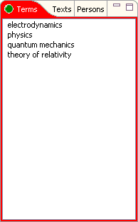

The application provides for each item type a list for selection. These three selection lists are arranged stacked at the left side.

You can use these lists to select an item for display in the Relations browsers
by double clicking
or pressing the Return key. You can select
multiple items in a list and drag'n drop them
on an item in the Relations browser to make the selected items related
with the drop target. The same
happens by entering Ctrl+Shift+R.
In addition, you can delete an item and all its relations by
pressing the Delete key.